Charts¶
Chart and data visualization classes. All charts inherit from
VCollection (unless noted) and can be animated, positioned,
and styled like any other object.
PieChart¶
- class PieChart(values, labels=None, colors=None, cx=960, cy=540, r=240, start_angle=90, creation=0, z=0)¶
Pie chart built from
Wedgesectors.- Parameters:
values (list) – Numeric values for each sector.
labels (list) – Optional labels placed inside sectors.
colors (list) – Sector fill colors (cycles through defaults if
None).r (float) – Outer radius.
- classmethod from_dict(data, **kwargs)¶
Create a
PieChartfrom a{label: value}dictionary.
- get_sector(index)¶
Return the
Wedgeobject at index.
- highlight_sector(index, start=0, end=1, pull_distance=30, easing=there_and_back)¶
Pull a sector outward to highlight it.
- explode(indices, distance=20, start=0, end=None, easing=smooth)¶
Permanently shift the given sectors outward.
- animate_values(new_values, start=0, end=1, easing=smooth)¶
Animate sector angles to reflect new_values.
- add_percentage_labels(fmt='{:.0f}%', font_size=16, color='#fff', creation=0)¶
Add percentage text inside each sector.
Example: PieChart
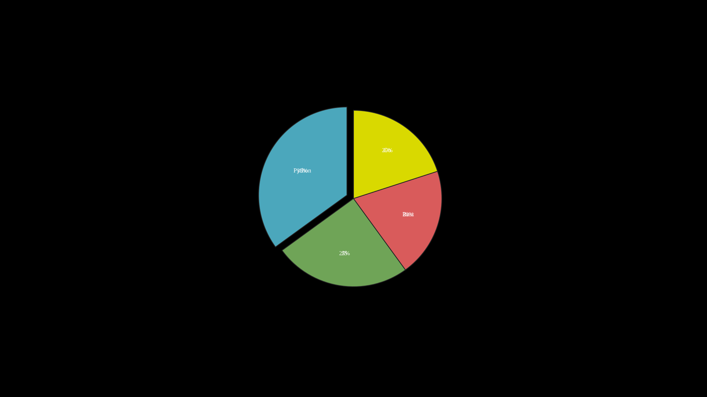
Pie chart with sector highlight.
"""Pie chart with highlighted sector."""
from vectormation.objects import *
v = VectorMathAnim()
v.set_background()
pie = PieChart([35, 25, 20, 20], labels=['Python', 'JS', 'Rust', 'Go'])
pie.add_percentage_labels()
pie.explode([0], distance=20)
v.add(pie)
v.show(end=2)
Example: Animated PieChart
"""Animated pie chart with value transitions."""
from vectormation.objects import *
v = VectorMathAnim()
v.set_background()
pie = PieChart([30, 20, 50], labels=['A', 'B', 'C'])
pie.fadein(start=0, end=1)
pie.animate_values([40, 40, 20], start=2, end=3)
v.add(pie)
v.show(end=4)
DonutChart¶
- class DonutChart(values, labels=None, colors=None, cx=960, cy=540, r=240, inner_radius=120, start_angle=90, center_text=None, font_size=17, creation=0, z=0)¶
Donut (ring) chart – a
PieChartwith a hollow center.- Parameters:
inner_radius (float) – Inner ring radius.
center_text (str) – Optional text displayed in the hole.
- classmethod from_dict(data, **kwargs)¶
Create a
DonutChartfrom a{label: value}dictionary.
- get_sector(index)¶
Return the
Pathobject for the sector at index.
- highlight_sector(index, start=0, end=1, pull_distance=30, easing=there_and_back)¶
Pull a sector outward to highlight it.
- animate_values(new_values, start=0, end=1, easing=smooth)¶
Animate sector paths to new proportions.
Example: DonutChart
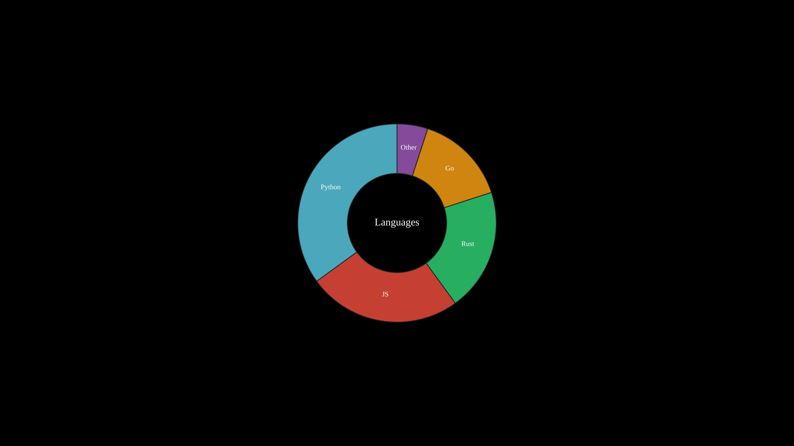
"""DonutChart with sample data."""
from vectormation.objects import *
v = VectorMathAnim()
v.set_background()
chart = DonutChart(
values=[35, 25, 20, 15, 5],
labels=['Python', 'JS', 'Rust', 'Go', 'Other'],
colors=['#58C4DD', '#E74C3C', '#2ECC71', '#F39C12', '#9B59B6'],
center_text='Languages',
)
v.add(chart)
v.show(end=0)
BarChart¶
- class BarChart(values, labels=None, colors=None, x=120, y=60, width=1440, height=840, bar_spacing=0.2, creation=0, z=0)¶
Simple bar chart with a baseline and optional labels.
- Parameters:
values (list) – Numeric bar heights.
labels (list) – Category labels below bars.
bar_spacing (float) – Fraction of bar width used as gap (0–1).
- classmethod from_dict(data, **kwargs)¶
Create a
BarChartfrom a{label: value}dictionary.
- animate_values(new_values, start=0, end=1, easing=smooth)¶
Animate bars to new heights.
- set_bar_color(index, color, start=0, end=None, easing=smooth)¶
Change the fill color of one bar.
- set_bar_colors(colors, start=0)¶
Set all bar colors at once.
- get_bar(index)¶
Return the
Rectanglefor bar index.
- get_bars(start_idx=None, end_idx=None)¶
Return a
VCollectionof bars, optionally sliced.
- highlight_bar(index, color='#FFFF00', start=0, end=None, opacity=None)¶
Highlight a single bar.
- get_bar_by_label(label)¶
Return the bar matching a label string, or
None.
- add_value_labels(fmt='{:.0f}', offset=10, font_size=20, creation=0)¶
Place value text above each bar.
- grow_from_zero(start=0, end=1, easing=smooth, stagger=True, delay=0.1)¶
Animate bars growing from the baseline.
- get_max_bar()¶
Return the
Rectanglewith the highest value.
- get_min_bar()¶
Return the
Rectanglewith the lowest value.
- add_bar(value, label=None, start=0, end=None)¶
Append a new bar to the right side of the chart.
- remove_bar(index, start=0, end=None)¶
Remove a bar by index, optionally with a shrink animation.
- animate_sort(key=None, reverse=False, start=0, end=1, easing=smooth)¶
Smoothly slide bars into sorted order. Alias:
sort_bars.
Example: BarChart
Bar chart growing from zero with sort animation.
"""Bar chart grow and sort."""
from vectormation.objects import *
v = VectorMathAnim()
v.set_background()
bc = BarChart([40, 70, 25, 55, 90], labels=['Q1', 'Q2', 'Q3', 'Q4', 'Q5'],
colors=['#E74C3C', '#3498DB', '#2ECC71', '#F39C12', '#9B59B6'])
bc.grow_from_zero(start=0, end=1.5)
bc.animate_sort(start=2, end=3.5)
v.add(bc)
v.show(end=4)
RadarChart¶
- class RadarChart(values, labels=None, max_val=None, colors=None, cx=960, cy=540, radius=250, font_size=16, fill_opacity=0.3, creation=0, z=0)¶
Radar (spider) chart. Requires at least 3 values.
- Parameters:
values (list) – Data values, one per axis.
labels (list) – Axis labels around the perimeter.
max_val (float) – Maximum data value (auto-detected if
None).
- classmethod from_dict(data, **kwargs)¶
Create a
RadarChartfrom a{label: value}dictionary.
- add_dataset(values, color=None, fill_opacity=None, creation=0, z=0.15)¶
Add an additional data polygon overlay to the radar chart.
Example: RadarChart
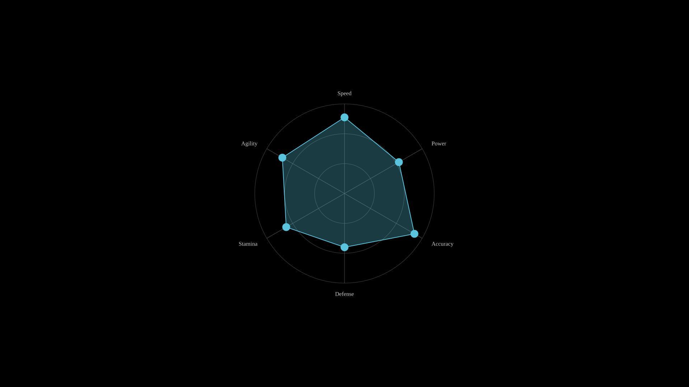
"""RadarChart with sample data."""
from vectormation.objects import *
v = VectorMathAnim()
v.set_background()
chart = RadarChart(
values=[85, 70, 90, 60, 75, 80],
labels=['Speed', 'Power', 'Accuracy', 'Defense', 'Stamina', 'Agility'],
max_val=100,
colors=['#58C4DD'],
)
v.add(chart)
v.show(end=0)
PolarAxes¶
- class PolarAxes(cx=960, cy=540, max_radius=400, r_range=(0, 5), n_rings=5, n_sectors=12, creation=0, z=0)¶
Polar coordinate system with concentric rings and angular gridlines.
- Parameters:
max_radius (float) – Outer radius in pixels.
r_range (tuple) –
(min, max)radial data range.n_rings (int) – Number of concentric rings.
n_sectors (int) – Number of angular sector lines.
- polar_to_point(r, theta_deg)¶
Convert polar
(r, theta)to SVG pixel coordinates.
- plot_polar(func, theta_range=(0, 360), num_points=200, creation=0, z=0, **styling)¶
Plot
r = func(theta_deg)as a polyline on these axes. Returns theLinesobject.
Legend¶
- class Legend(items, x=100, y=100, swatch_size=16, spacing=8, font_size=16, direction='down', creation=0, z=0)¶
Chart legend with colored swatches and text labels.
- Parameters:
items (list) – List of
(color, label)tuples.direction (str) –
'down'for vertical,'right'for horizontal.
ProgressBar¶
- class ProgressBar(width=400, height=30, x=760, y=520, bg_color='#333', fill_color='#58C4DD', corner_radius=6, creation=0, z=0)¶
Animated progress bar that fills from left to right.
- set_progress(value, start=0, end=None, easing=smooth)¶
Set progress (0 to 1). Animates if end is given.
- animate_to(value, start=0, end=1, easing=smooth)¶
Animate progress to a target value (0–1).
- get_progress(time=0)¶
Return the current progress value (0–1) at the given time.
Example: ProgressBar
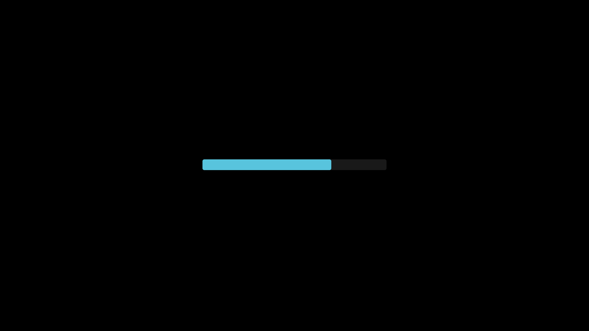
"""ProgressBar at 70% fill."""
from vectormation.objects import *
v = VectorMathAnim()
v.set_background()
bar = ProgressBar(width=600, height=35, x=660, y=520, fill_color='#58C4DD')
bar.set_progress(0.7)
v.add(bar)
v.show(end=0)
SampleSpace¶
- class SampleSpace(width=500, height=400, x=710, y=340, creation=0, z=0, **styling)¶
Rectangle representing a probability sample space, divisible into regions.
- divide_horizontally(proportion, colors=('#58C4DD', '#FC6255'), labels=None, creation=0, z=0)¶
Split the space left/right by proportion (0–1).
- divide_vertically(proportion, colors=('#58C4DD', '#FC6255'), labels=None, creation=0, z=0)¶
Split the space top/bottom by proportion (0–1).
Example: SampleSpace
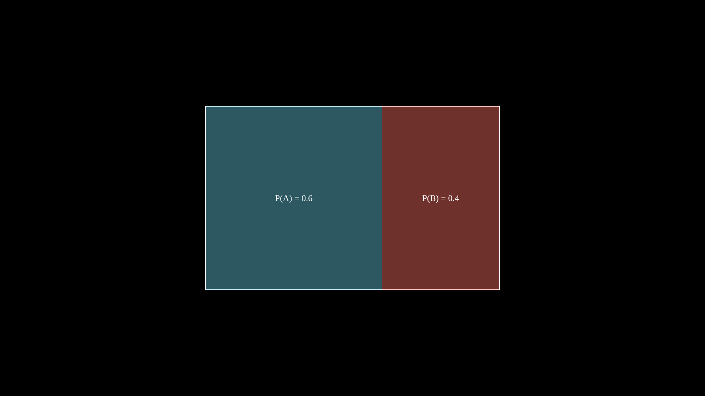
"""SampleSpace with horizontal division."""
from vectormation.objects import *
v = VectorMathAnim()
v.set_background()
space = SampleSpace(width=800, height=500, x=560, y=290)
space.divide_horizontally(0.6, colors=('#58C4DD', '#FC6255'), labels=['P(A) = 0.6', 'P(B) = 0.4'])
v.add(space)
v.show(end=0)
WaterfallChart¶
- class WaterfallChart(values, labels=None, x=200, y=100, width=800, height=400, bar_width=0.7, pos_color='#83C167', neg_color='#FF6B6B', total_color='#58C4DD', connector_color='#666', font_size=16, show_total=True, creation=0, z=0)¶
Waterfall chart showing the cumulative effect of positive and negative values. Each bar starts where the previous one ended, with dashed connectors between them.
- Parameters:
values (list) – Incremental values (positive or negative).
labels (list) – Bar labels.
show_total (bool) – Append a total bar at the end.
- classmethod from_dict(data, **kwargs)¶
Create a
WaterfallChartfrom a{label: value}dictionary.
Example: WaterfallChart
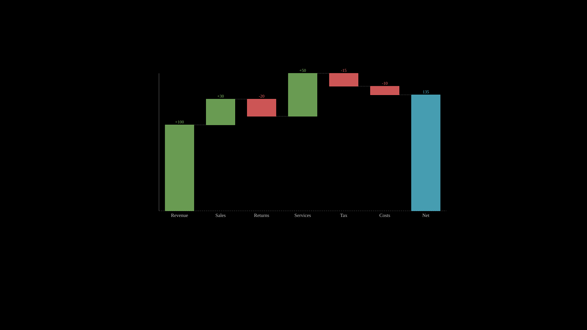
"""WaterfallChart showing cumulative values."""
from vectormation.objects import *
v = VectorMathAnim()
v.set_background()
chart = WaterfallChart(
values=[100, 30, -20, 50, -15, -10],
labels=['Revenue', 'Sales', 'Returns', 'Services', 'Tax', 'Costs', 'Net'],
x=460, y=240, width=1000, height=500,
)
v.add(chart)
v.show(end=0)
GanttChart¶
- class GanttChart(tasks, x=100, y=80, width=1200, bar_height=30, bar_spacing=10, colors=None, font_size=16, creation=0, z=0)¶
Gantt chart for project timelines.
- Parameters:
tasks (list) – List of
(label, start, end)or(label, start, end, color)tuples.bar_height (float) – Height of each task bar.
Example: GanttChart
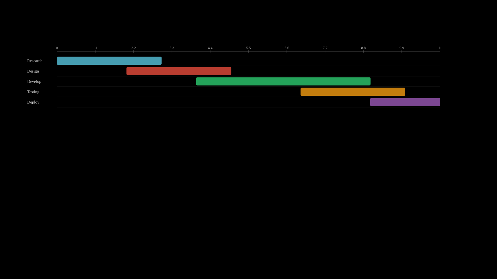
"""GanttChart for project timelines."""
from vectormation.objects import *
v = VectorMathAnim()
v.set_background()
chart = GanttChart(
tasks=[
('Research', 0, 3, '#58C4DD'),
('Design', 2, 5, '#E74C3C'),
('Develop', 4, 9, '#2ECC71'),
('Testing', 7, 10, '#F39C12'),
('Deploy', 9, 11, '#9B59B6'),
],
x=100, y=200, width=1600,
)
v.add(chart)
v.show(end=0)
SankeyDiagram¶
- class SankeyDiagram(flows, x=100, y=100, width=1200, height=600, node_width=30, node_spacing=20, colors=None, font_size=16, creation=0, z=0)¶
Sankey flow diagram showing weighted flows between source and target nodes connected by curved bands.
- Parameters:
flows (list) – List of
(source, target, value)tuples.node_width (float) – Width of the node rectangles.
Example: SankeyDiagram
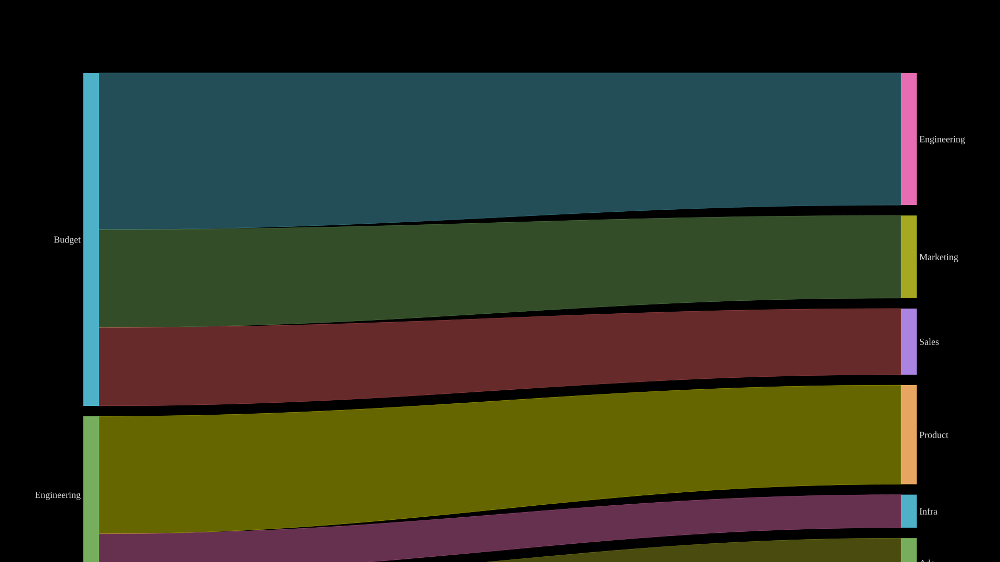
"""SankeyDiagram flow visualization."""
from vectormation.objects import *
v = VectorMathAnim()
v.set_background()
chart = SankeyDiagram(
flows=[
('Budget', 'Engineering', 400),
('Budget', 'Marketing', 250),
('Budget', 'Sales', 200),
('Engineering', 'Product', 300),
('Engineering', 'Infra', 100),
('Marketing', 'Ads', 150),
('Marketing', 'Content', 100),
('Sales', 'Direct', 120),
('Sales', 'Partners', 80),
],
x=160, y=140, width=1600, height=700,
font_size=18,
)
v.add(chart)
v.show(end=0)
FunnelChart¶
- class FunnelChart(stages, x=100, y=100, width=600, height=500, colors=None, font_size=18, gap=4, creation=0, z=0)¶
Funnel chart showing progressive narrowing stages.
- Parameters:
stages (list) – List of
(label, value)tuples, from widest to narrowest.gap (float) – Vertical gap between trapezoids.
Example: FunnelChart
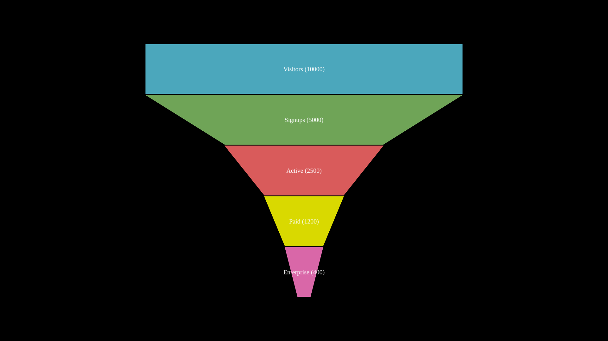
"""FunnelChart showing conversion stages."""
from vectormation.objects import *
v = VectorMathAnim()
v.set_background()
chart = FunnelChart(
stages=[
('Visitors', 10000),
('Signups', 5000),
('Active', 2500),
('Paid', 1200),
('Enterprise', 400),
],
x=460, y=140, width=1000, height=800,
font_size=20,
)
v.add(chart)
v.show(end=0)
TreeMap¶
- class TreeMap(data, x=100, y=100, width=800, height=600, colors=None, font_size=14, padding=2, creation=0, z=0)¶
Treemap visualization using a squarified layout.
- Parameters:
data (list) – List of
(label, value)tuples.padding (float) – Gap between cells.
Example: TreeMap
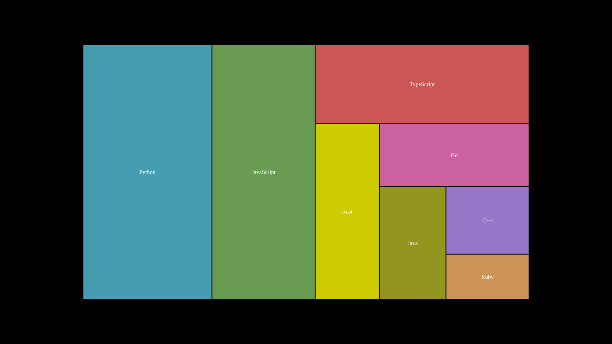
"""TreeMap visualization of category sizes."""
from vectormation.objects import *
v = VectorMathAnim()
v.set_background()
chart = TreeMap(
data=[
('Python', 35),
('JavaScript', 28),
('TypeScript', 18),
('Rust', 12),
('Go', 10),
('Java', 8),
('C++', 6),
('Ruby', 4),
],
x=260, y=140, width=1400, height=800,
font_size=18,
)
v.add(chart)
v.show(end=0)
GaugeChart¶
- class GaugeChart(value, min_val=0, max_val=100, x=960, y=540, radius=200, start_angle=225, end_angle=-45, colors=None, label=None, font_size=36, tick_count=5, creation=0, z=0)¶
Speedometer-style gauge chart with a needle, colored arc bands, and tick marks.
- Parameters:
value (float) – Current gauge value.
min_val (float) – Minimum scale value.
max_val (float) – Maximum scale value.
colors (list) – Color stops as
[(hex_color, position), ...]where position is 0–1.label (str) – Optional label below the value.
Example: GaugeChart
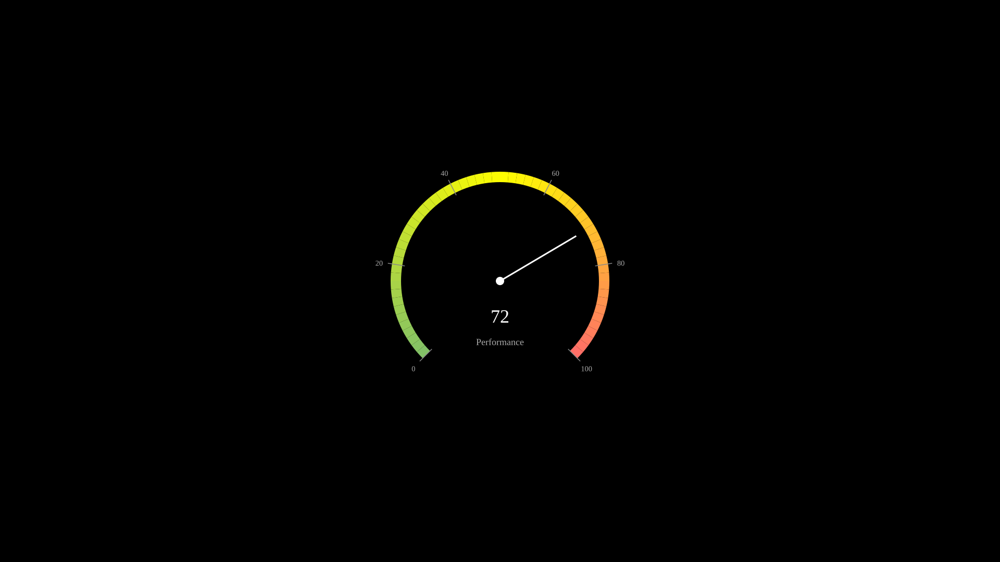
"""GaugeChart speedometer display."""
from vectormation.objects import *
v = VectorMathAnim()
v.set_background()
chart = GaugeChart(
value=72,
min_val=0,
max_val=100,
label='Performance',
)
v.add(chart)
v.show(end=0)
SparkLine¶
- class SparkLine(data, x=100, y=100, width=120, height=30, stroke='#58C4DD', stroke_width=1.5, show_endpoint=False, creation=0, z=0)¶
Bases:
VObjectMinimal inline sparkline chart rendered as a single SVG path.
- Parameters:
data (list) – Numeric data points.
show_endpoint (bool) – Draw a dot at the last data point.
Example: SparkLine
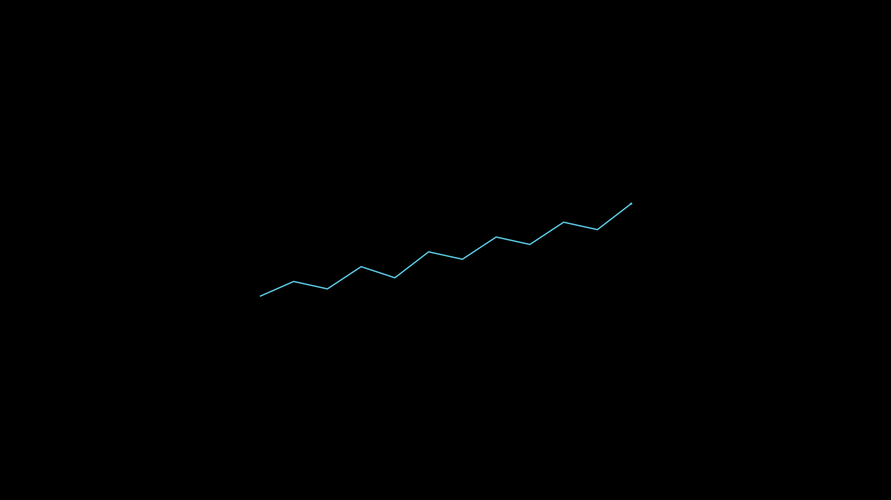
"""SparkLine inline chart."""
from vectormation.objects import *
v = VectorMathAnim()
v.set_background()
spark = SparkLine(
data=[10, 14, 12, 18, 15, 22, 20, 26, 24, 30, 28, 35],
x=560, y=440, width=800, height=200,
stroke='#58C4DD', stroke_width=3, show_endpoint=True,
)
v.add(spark)
v.show(end=0)
KPICard¶
- class KPICard(title, value, subtitle=None, trend_data=None, x=100, y=100, width=280, height=160, bg_color='#1a1a2e', title_color='#aaa', value_color='#fff', font_size=48, creation=0, z=0)¶
Metric card showing a title, large value, optional subtitle, and an embedded trend sparkline.
- Parameters:
title (str) – Card header text.
value – Main displayed value.
subtitle (str) – Optional secondary text.
trend_data (list) – Data points for the embedded
SparkLine.
Example: KPI card with sparkline
card = KPICard('Revenue', '$1.2M', subtitle='+12% MoM', trend_data=[10, 12, 11, 14, 13, 16])
Example: KPICard
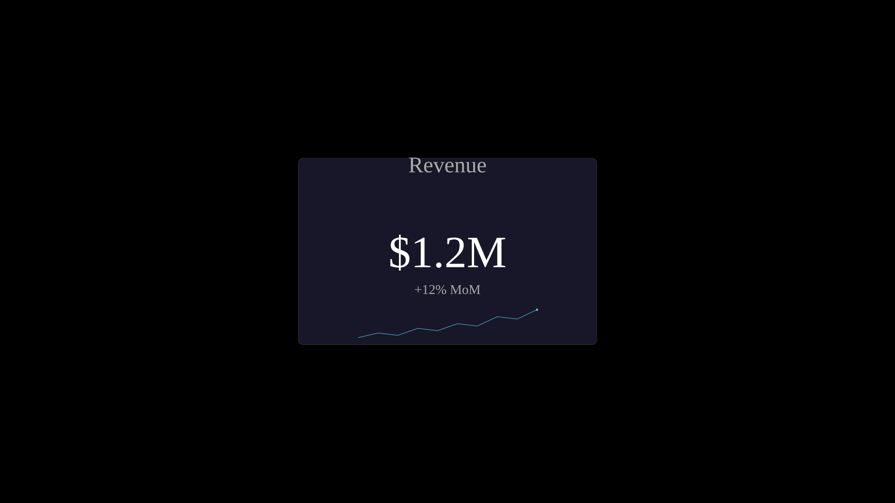
"""KPICard metric display."""
from vectormation.objects import *
v = VectorMathAnim()
v.set_background()
card = KPICard(
'Revenue', '$1.2M',
subtitle='+12% MoM',
trend_data=[10, 12, 11, 14, 13, 16, 15, 19, 18, 22],
x=640, y=340, width=640, height=400,
font_size=96,
)
v.add(card)
v.show(end=0)
BulletChart¶
- class BulletChart(actual, target, ranges=None, label=None, x=100, y=100, width=500, height=40, bar_color='#333', target_color='#fff', font_size=16, max_val=None, creation=0, z=0)¶
Bullet chart: qualitative background ranges, an actual-value bar, and a target marker line.
- Parameters:
actual (float) – Actual measured value.
target (float) – Target value (shown as a vertical line).
ranges (list) –
[(threshold, color), ...]background bands.label (str) – Label text to the left.
Example: BulletChart
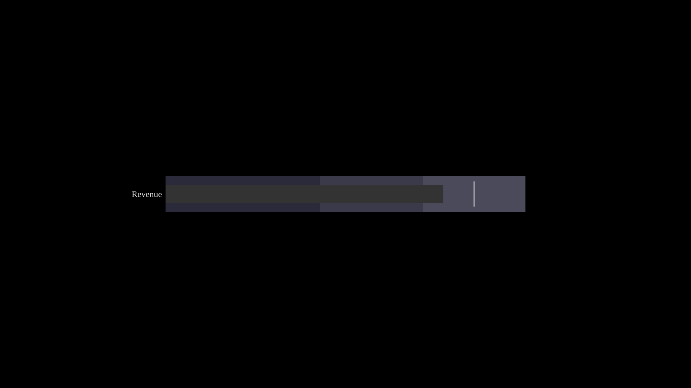
"""BulletChart comparing actual vs target."""
from vectormation.objects import *
v = VectorMathAnim()
v.set_background()
chart = BulletChart(
actual=270,
target=300,
ranges=[(150, '#2a2a3a'), (250, '#3a3a4a'), (350, '#4a4a5a')],
label='Revenue',
x=460, y=490, width=1000, height=100,
font_size=24,
max_val=350,
)
v.add(chart)
v.show(end=0)
CalendarHeatmap¶
- class CalendarHeatmap(data, rows=7, cols=52, x=100, y=100, cell_size=14, gap=2, colormap=None, creation=0, z=0)¶
Grid heatmap similar to a GitHub contribution graph.
- Parameters:
data – A
dictmapping(row, col)to values, or a flat iterable.colormap (list) – List of color strings from low to high.
Example: CalendarHeatmap
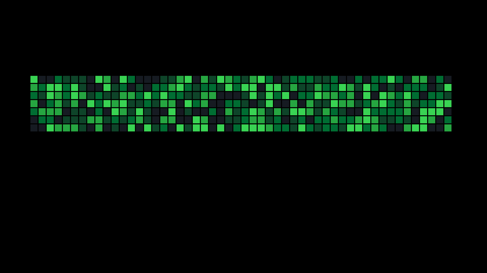
"""CalendarHeatmap contribution-style grid."""
import random
from vectormation.objects import *
v = VectorMathAnim()
v.set_background()
random.seed(42)
data = {(r, c): random.randint(0, 10) for r in range(7) for c in range(52)}
chart = CalendarHeatmap(
data=data,
rows=7, cols=52,
x=120, y=300, cell_size=28, gap=4,
)
v.add(chart)
v.show(end=0)
WaffleChart¶
- class WaffleChart(categories, x=100, y=100, grid_size=10, cell_size=20, gap=3, font_size=14, creation=0, z=0)¶
Waffle chart: a grid of colored squares showing category proportions, with an auto-generated legend.
- Parameters:
categories (list) – List of
(label, value, color)tuples.grid_size (int) – Number of cells per row/column.
Example: WaffleChart
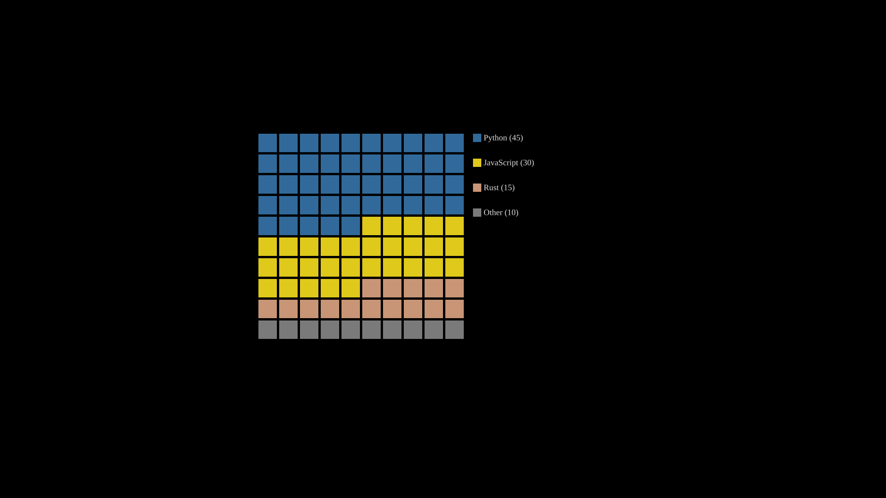
"""WaffleChart showing category proportions."""
from vectormation.objects import *
v = VectorMathAnim()
v.set_background()
chart = WaffleChart(
categories=[
('Python', 45, '#3776AB'),
('JavaScript', 30, '#F7DF1E'),
('Rust', 15, '#DEA584'),
('Other', 10, '#888888'),
],
x=560, y=290, grid_size=10, cell_size=40, gap=5,
font_size=18,
)
v.add(chart)
v.show(end=0)
CircularProgressBar¶
- class CircularProgressBar(value, x=960, y=540, radius=80, stroke_width=12, track_color='#2a2a3a', bar_color='#58C4DD', font_size=36, show_text=True, creation=0, z=0)¶
Circular (ring) progress indicator with percentage text in the center.
- Parameters:
value (float) – Progress percentage (0–100).
show_text (bool) – Display the percentage as text.
Example: CircularProgressBar
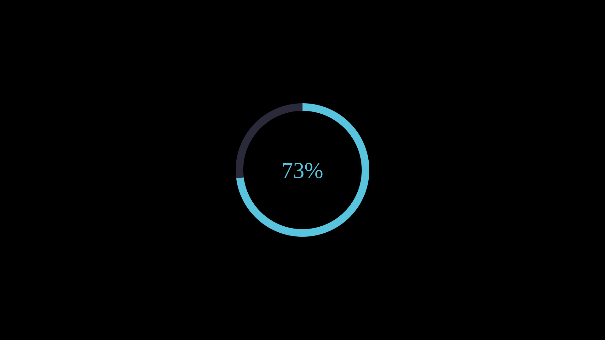
"""CircularProgressBar indicator."""
from vectormation.objects import *
v = VectorMathAnim()
v.set_background()
chart = CircularProgressBar(
value=73,
radius=200,
stroke_width=24,
font_size=72,
)
v.add(chart)
v.show(end=0)
Scoreboard¶
- class Scoreboard(entries, x=100, y=100, col_width=200, row_height=60, bg_color='#1a1a2e', label_color='#aaa', value_color='#fff', font_size=28, cols=None, creation=0, z=0)¶
Score/metric display panel arranged in a grid layout.
- Parameters:
entries (list) – List of
(label, value)tuples.cols (int) – Number of columns (defaults to
min(len(entries), 4)).
Example: Scoreboard
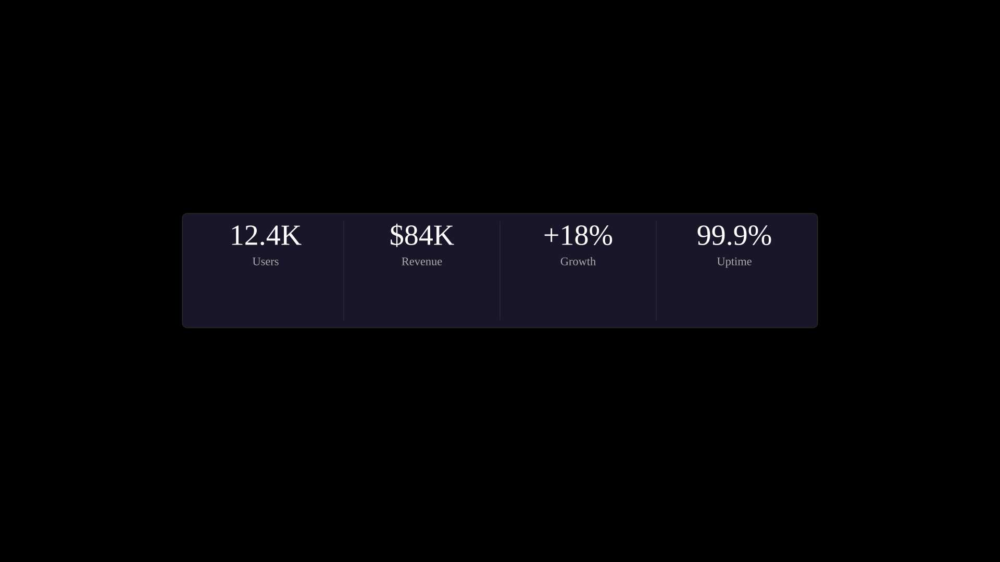
"""Scoreboard metric panel."""
from vectormation.objects import *
v = VectorMathAnim()
v.set_background()
chart = Scoreboard(
entries=[
('Users', '12.4K'),
('Revenue', '$84K'),
('Growth', '+18%'),
('Uptime', '99.9%'),
],
x=360, y=420, col_width=300, row_height=200,
font_size=56,
)
v.add(chart)
v.show(end=0)
MatrixHeatmap¶
- class MatrixHeatmap(data, row_labels=None, col_labels=None, x=100, y=100, cell_size=50, gap=2, colormap=None, font_size=14, show_values=True, creation=0, z=0)¶
Labeled matrix heatmap with colored cells.
- Parameters:
data (list) – 2D list of numeric values (list of rows).
row_labels (list) – Labels for each row.
col_labels (list) – Labels for each column.
colormap (list) – Color scale from low to high.
show_values (bool) – Display cell values as text.
Example: MatrixHeatmap
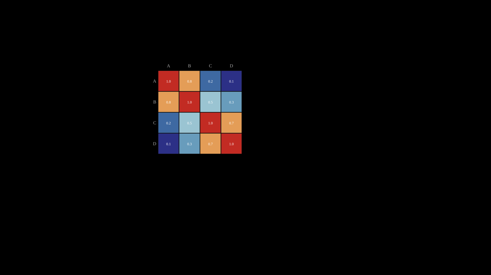
"""MatrixHeatmap with labeled rows and columns."""
from vectormation.objects import *
v = VectorMathAnim()
v.set_background()
chart = MatrixHeatmap(
data=[
[1.0, 0.8, 0.2, 0.1],
[0.8, 1.0, 0.5, 0.3],
[0.2, 0.5, 1.0, 0.7],
[0.1, 0.3, 0.7, 1.0],
],
row_labels=['A', 'B', 'C', 'D'],
col_labels=['A', 'B', 'C', 'D'],
x=600, y=250, cell_size=80, font_size=18,
)
v.add(chart)
v.show(end=0)
BoxPlot¶
- class BoxPlot(data_groups, positions=None, x=100, y=100, plot_width=400, plot_height=300, box_width=30, box_color='#58C4DD', whisker_color='#aaa', median_color='#FF6B6B', font_size=12, creation=0, z=0)¶
Box-and-whisker plot for one or more data groups. Computes quartiles, median, and whiskers automatically.
- Parameters:
data_groups (list) – List of lists, each containing numeric data for one group.
positions (list) – X-axis positions for each group (defaults to 1, 2, 3, …).
Example: BoxPlot
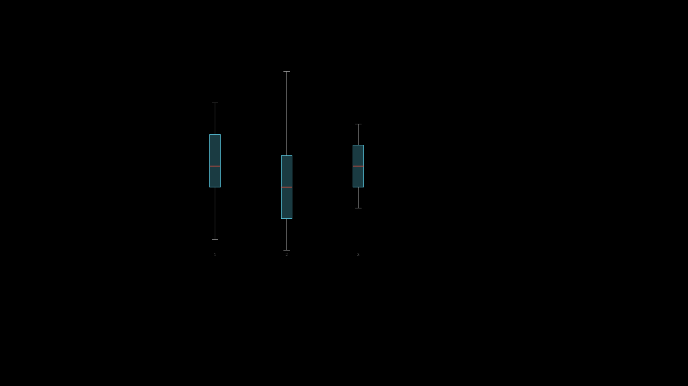
"""BoxPlot with multiple data groups."""
from vectormation.objects import *
v = VectorMathAnim()
v.set_background()
chart = BoxPlot(
data_groups=[
[2, 5, 7, 8, 9, 10, 12, 14, 15],
[1, 3, 4, 6, 7, 8, 10, 11, 18],
[5, 6, 7, 8, 9, 10, 11, 12, 13],
],
x=500, y=200, plot_width=600, plot_height=500,
box_color='#58C4DD', median_color='#E74C3C',
)
v.add(chart)
v.show(end=0)